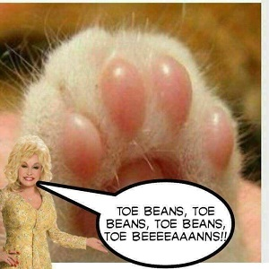

The pink squishy pads on the underside of an animal's paws, particularly a cat's - so named for their resemblance to jelly beans.
Toe Beans R Us

And that's when it becomes fun - you don't have to spend your time thinking about what's happening - you just let it happen. Mountains are so simple, they're hard. We start with a vision in our heart, and we put it on canvas. We touch the canvas, the canvas takes what it wants. You can spend all day playing with mountains. We don't want to set these clouds on fire. Use absolutely no pressure.
And that's when it becomes fun - you don't have to spend your time thinking about what's happening - you just let it happen. Mountains are so simple, they're hard. We start with a vision in our heart, and we put it on canvas. We touch the canvas, the canvas takes what it wants. You can spend all day playing with mountains. We don't want to set these clouds on fire. Use absolutely no pressure.